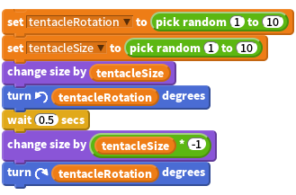

Activity Checklist
To make a tentacle wiggle, we could rotate it and resize it by a
randomsmall amount using a variable, and then wait a short period before reverting back.
(Notice how we multiply the tentacleSize by -1 to get the negative value?)